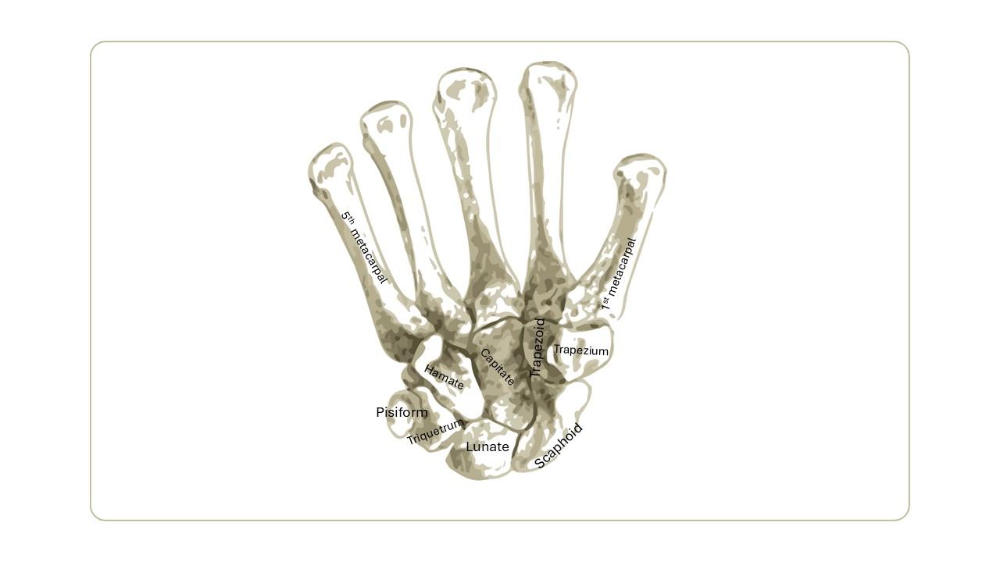

Bones of the hand
Carpal bones
8 carpal bones
Proximal row from radial to ulnar side
Scaphoid, Lunate, triquetrum and pisiform
Distal row from radial to ulnar side
Trapezium, Trapezoid, Capitulum and Hamate

Peculiarities of pisiform
It is a sesamoid bone in tendon of flexor carpi ulnaris
It ossifies by 10-11 years
Peculiarities of Scaphoid bone and scaphoid bone fracture
It is a boat shaped proximal row radial side carpal bone
Fracture scaphoid is the most common carpal bone fracture
Arterial flow to the scaphoid enters via the distal pole and travels to the proximal pole
Avascular necrosis is the most common complication of scaphoid bone fracture
Hamate bone - important features
Hamate is a wedge shaped carpal bone in distal row
Has a hook like extension - hook of hamate - (that's why the name - hamate)
Hook of hamate - forms a part of Guyon's canal (passage of ulnar nerve and ulnar artery)
Attachments are
- Tendon of flexor carpi ulnaris
- Transverse carpal ligament
- Ligaments from pisiform
Hamate is most commonly fractured in golfer, while hitting the hard golf ball or ground.
Mnemonic to remember carpal bones
She Looks Too Pretty
Try To Catch Her
Proximal row first, You are catching girl standing at far end.
Bones are from lateral to medial
Metacarpals
Parts of metacarpals
From proximal to distal
Head
Body
Base
Phalanges
Parts of phalanges
From proximal to distal
Base
Body
Head